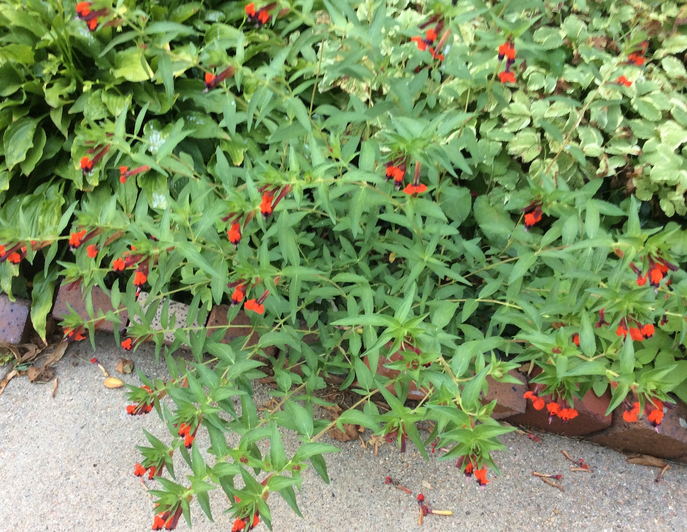

CUPHEA: Bat Faced is a popular variety
Cuphea are grown as annuals. If you have the space inside, you can bring it indoors for the winter.

- If you have it planted in the ground, dig it up and pot it in a container. Pinch back the stem tips.
- If you have it planted in a container, simply pinch back the stem tips.
- Keep the Cuphea moist and in a sunny location.
- Throughout the winter, you will need to pinch back the stem tips, to maintain a dense compact shape.
- It may continue to bloom all winter.
Go to Home Page